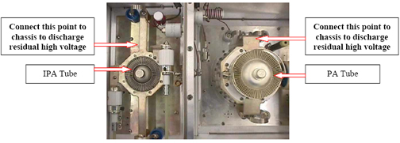
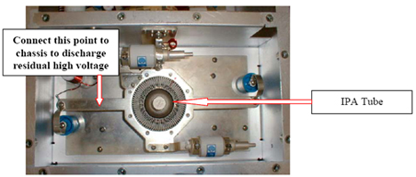
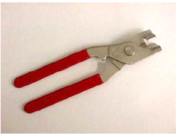

Illustration 2: Discharge Locations

| NOTE: | Do not remove any of the hardware or circuit components until you are directed to do so in the following steps. Each tube is separately installed and removed. It is not necessary to remove both tubes in order to replace just one. |
The IPA tube portion of the RF deck is shown in Illustration 3.
Illustration 3: IPA Tube Compartment

The high voltage connection to the IPA tube is made via a ring bracket that surrounds and contacts the anode. The bracket is secured to the tank circuitry and is not to be removed! The tube is removed from its socket with a specially designed set of pliers. The pliers are packaged with replacement tubes. DO NOT USE ANY OTHER TOOL! The pliers are shown in Illustration 4.
Illustration 4: Tube Pulling Pliers

The pliers are designed to grip the tube anode cap only.